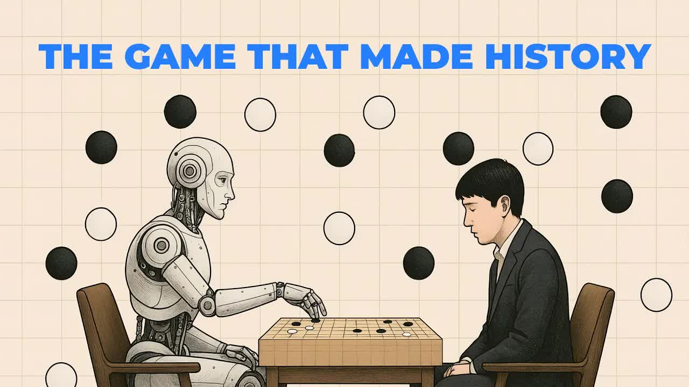
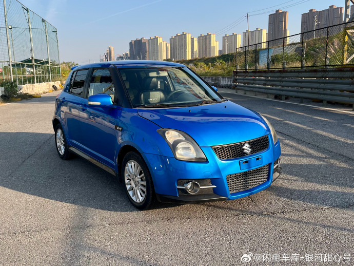
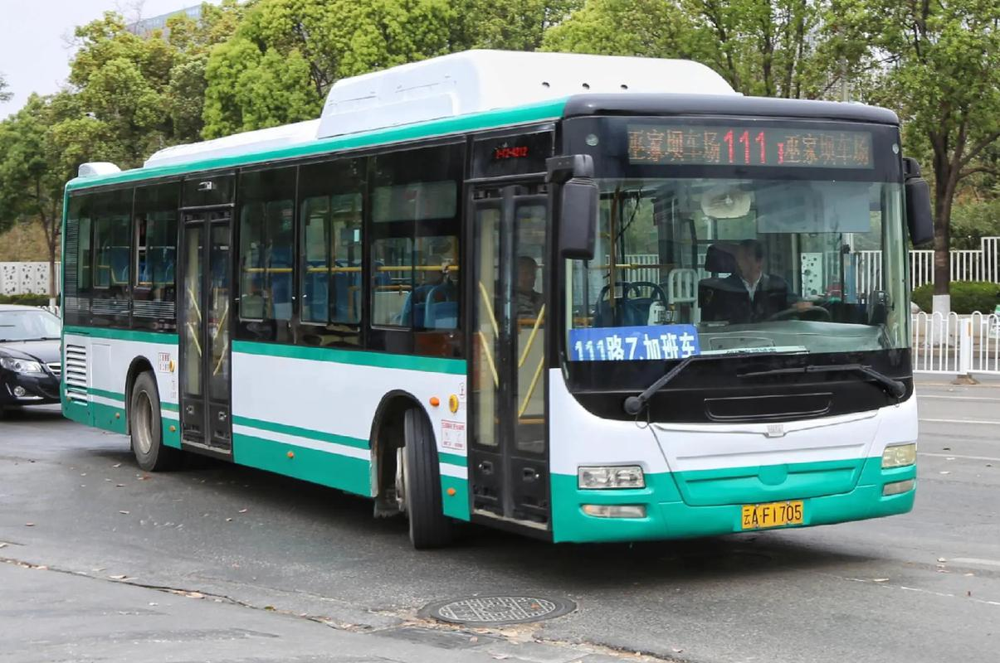
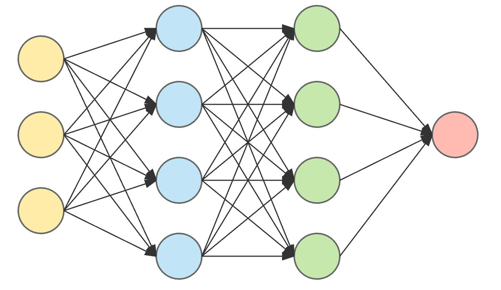

人工智能：以机器（计算机）为载体
模仿、延伸和扩展人类智能

路上越来越多的无人车


如何实现无人驾驶的AI?
现在能发展出无人驾驶AI的原因？
AI玩转小恐龙实验室——实验1
实验1任务
1. 分别体验手玩和 AI 控制的小恐龙
2. 思考 AI 控制的小恐龙有什么问题，如何改进？
📜 符号主义：起始于1950年代
-
核心思想
学习或者其他的智能特征原则上均可以被符号精确地描述，从而被机器仿真
智能行为就是对符号的推理和运算
IF 距离仙人掌较近 THEN 跳跃
高二1班的信息老师是李老师
张三的信息老师是谁？
=> 李老师
无人驾驶规则?
交通规则：红灯停、绿灯行……
现实路况极为复杂
难以穷举所有规则
路标、行人、车辆的图像识别
难以用符号规则表示
符号主义思想易理解、可解释性强
难以穷尽、甚至无法编写规则
人工智能进入了一段时间的低潮
AI玩转小恐龙实验室——实验2
实验2任务
1. 手玩2000-5000帧（两人一组，1人吃金币，1人不吃金币）
2. 点击“大脑”图标，训练模型（耗时约10秒）
3. 开启 AI 控制
4. 实验2的小恐龙 AI 与实验1的有什么区别
🧠 联结主义：1980年代兴起，2010年代起火热
- 思想：模仿人类神经元交互进行推理, 即人工神经网络
- 原理：通过标注数据进行训练，调整内部权重，涌现智能。



联结主义的应用：大语言模型
💬 大语言模型训练原理
不用手工标记，而是把无数网页文章切碎，
让 AI 看前文猜下一个字
| 版本 | 时间 | 模型参数量 | 训练数据量 | 训练算力消耗 |
|---|---|---|---|---|
| GPT-1 | 2018年 | 1.17 亿 | 5 GB (约7000本书) | 显卡机群，数天 |
| GPT-2 | 2019年 | 15 亿 | 40 GB (800万优质网页) | 数百张显卡，数周 |
| GPT-3 | 2020年 | 1750 亿 | 45 TB (3000亿个单词) | 上万张显卡，数月 |
| GPT-4 | 2023年 | 约 1.8 万亿 | PB级规模 (13万亿个单词) | 两万多张顶尖显卡，数月 |
如果没有足够的标注数据呢?
如果只是一味模仿、如何超越呢？
AI玩转小恐龙实验室——实验3
实验3任务
1. 训练模型
2. 观察 AI 小恐龙能力的变化
3. 实验3的小恐龙 AI 与实验1、2的有什么区别
🏃 行为主义：21世纪以来应用广泛
- 问题引导下的学习
从“交互-反馈”角度来刻画智能行为，认为智能体可以在与环境的交互中不断学习，从而提升自己的智能水平
🤖 AlphaGo的诞生：联结 + 行为的结晶
阶段 1：打基础 —— 联结主义
“喂”给 AI 大量人类高手的历史对弈棋谱。
看到什么样的棋盘局势，就知道这一步大概该下在哪
阶段 2：突破 —— 行为主义
当 AI 已经熟悉了人类套路后，让模型自己和自己“左右互搏”。
赢了奖励得分，输了扣分（交互-反馈）。
在试错摸索中，最终发现超越人类认知的新棋路。
🤔 头脑风暴：构建无人驾驶系统
结合今天所学的实现AI的三种方法
如何设计一款能够在复杂城市道路中
安全平稳运行的无人驾驶系统
课堂小结
📚 课后作业
通过搜索引擎或AI大模型
1. 探究生活中某种AI是如何实现的
2. 了解我国当前芯片产业的发展情况
🚗 AI驾驶：两种技术路线
路线1：流水线式模块化架构
感知：识别车辆、行人、红绿灯等（联结主义）
预测：预判其他交通参与者轨迹
规划：绿灯行、红灯停、限速（符号主义）
痛点：路况纷繁复杂，难以穷举
路线2：端到端
使用大模型代替原本的多个模块
依赖海量的数据训练模型
行为主义：AlphaGo Zero
不看人类棋谱，从零开始“自我对弈”
加深该赢棋套路的“脑回路”
打消该输棋套路的“脑回路”
以 100 : 0 战绩，彻底碾压学习人类经验的初代 AlphaGo！
💡 联结主义：更多案例
🎙️ 语音识别
收集成千上万小时的录音，告诉 AI 这段长短不一的声波曲线对应的文字是什么。